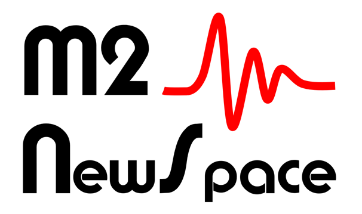

M2 NewSpace : "De l'instrument à la publication"
TP panorama de la chaîne d'acquisition, transmission, traitement et interprétation dans le contexte d'une mission d'exploration spatiale

Cours conçu pour les étudiants du M2 "NewSpace" de l'Université de Versailles Saint-Quentin (UVSQ)
Présentation du TP
Lors des scéances de cours, nous avons vu un panorama de la chaîne d'acquisition - transmission - traitement - interprétation des données d'un instrument, dans un contexte de mission d'exploration spatiale.
Ceci est un TP d'application des éléments vus en cours, afin de vérifier que vous avez bien compris les concepts et les enjeux associés.
Le sujet sera le sismomètre martien SEIS (CNES) de la mission Insight (NASA). Lors de ce TP, vous allez :
-
Lire des extraits de l'article de définition de SEIS par P. Lognonné, pour en comprendre le contexte scientifique de la mission et le design de l'instrument.
-
Etudier la partie "acquisition" de la chaîne de l'instrument.
-
Etudier la chaîne de transmission des cubesats de la mission Insight.
-
Traiter et analyser des enregistrements SEIS d'un séisme martien, afin de détecter les 4 grands types d'ondes sismiques.
Ce TP fera appel à de la programmation Python pour les calculs et les traitements.
Vous trouverez en fin de TP les réponses aux questions.
Credits
© Nicolas OUDART